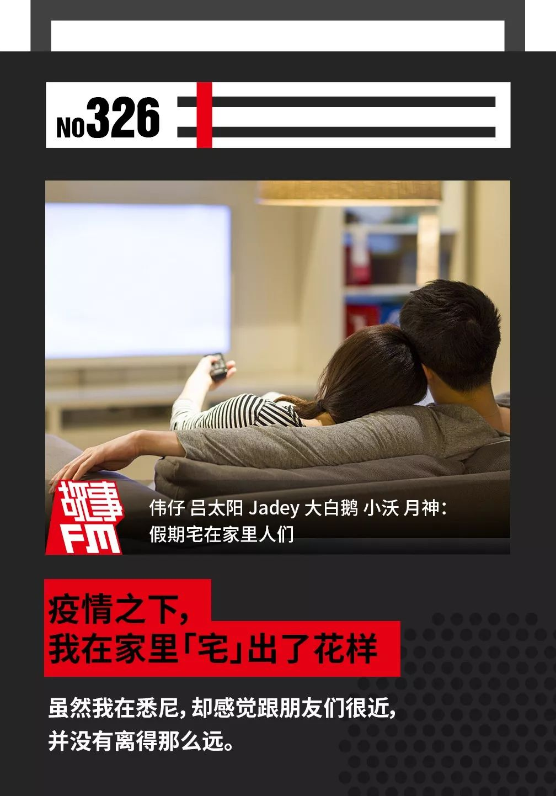
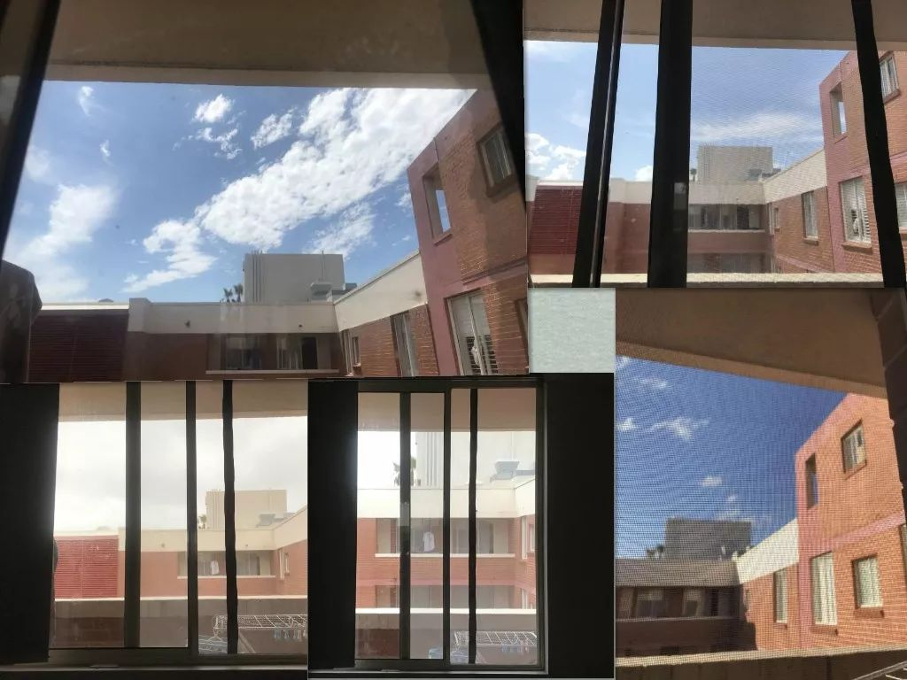
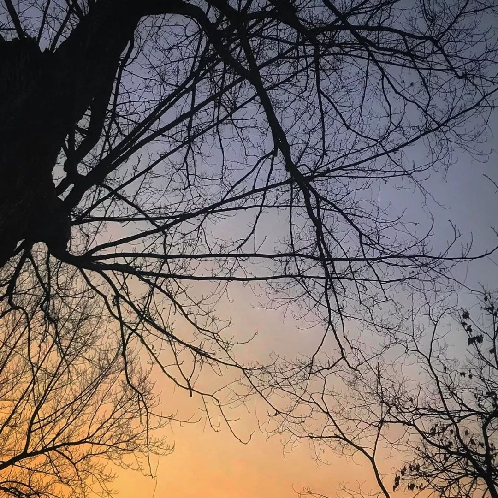
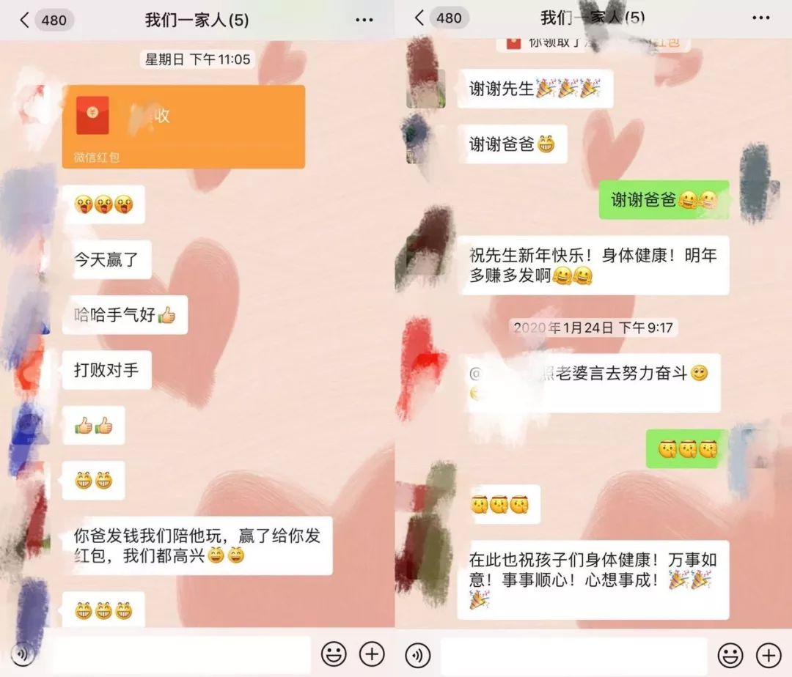

在人间丨妈妈在湖北当医生，我从美国寄口罩给她
原文链接 备份链接 凤凰新闻客户端 凤凰网在人间工作室出品 我家在湖北襄阳，妈妈是襄阳中心医院的医生。疫情发生以来，截至2月17日，襄阳新冠肺炎确诊病例累计1155例，在湖北省排名第七位。 我住在美国华盛顿。 1月21号，我给妈妈打电 …



🎧 点击上方图片，跳转「故事FM」小程序，收听真人讲述。记得添加「我的小程序」，一键收听全部故事哟！
因为新冠肺炎疫情的影响，到目前为止，可能不少人都已经在家宅了半个多月了。
长时间过封闭的生活，缺少户外的社交、娱乐，这多多少少都会影响人的心情。所以很多的专家、媒体都呼吁，不光要重视身体上的防护，还要关注心理上的健康。
上周，我们做了一个故事征集，让大家来讲讲各自宅在家的生活是怎么度过的。从这些故事里，你能看即使在疫情影响之下，人们也总能想到维系感情的新点子。
现在，让我们来听听他们的故事，希望能在这样的日子里给你带来一点调剂。
伟仔，35 岁，湖南长沙
放假以来，我和老婆孩子，我们三个人每天基本都重复着同样的动作，不是睡就是吃，一直处于精神有点抑郁的状态。
幸亏我还比较会找乐子，能找点方式排解一下。
我们单位女同事比较多，但她们的老公和我关系也都非常好。我们有一个共同的微信群，平时没事会叫出来一起喝酒。
因为现在是特殊时期，不能出门。只是通过文字上的联系，好像表达不了相互之间的思念之情。
于是我们就想了一个办法，每天晚上 10 点左右，群里 5、6 个人一起打开视频聊天，一起「云喝酒」。

■伟仔和群里的小伙伴一起举杯
虽然聊的无非就是家长里短，解解闷。但每天谁吃什么下酒菜都会成为这场「线上酒局」的一个重头戏。
刚开始的时候，大家家里储备还比较齐全，湖南特有的腊鱼腊肉、酱板鸭、特色卤味等等。我们还会评比，谁桌上的东西最丰富，谁就是土豪。

■下酒菜的 Before 和 After
后来因为没有出门的机会，出门也买不到东西，家里的存货越来越少，我们的下酒菜就只剩点花生米、薯片。
其实聚在一起并不是为了喝酒，喝什么其实都无所谓，就想大家在一起聊聊天，每天能有个盼头，晚上睡得才好。
吕太阳，温州永嘉
因为公婆年纪大了，想回到小时候住的地方，年前搬回了乡下。我也跟着来了，我不熟悉这里的环境和人。外面在封城，我的内心也慢慢进入一种半封闭状态。

■封城前，吕太阳散步经过一个废品站
好在我有一个大学同学群，有 4 个人。这次疫情开始后，我们特别关注，每天都在分享各种信息。虽然毕业 10 年，我们还是不时在群里有一搭没一搭地聊，都是就时事聊些严肃话题，几乎不闲聊。
有个女生问了一句「接下来几天你们都干嘛？」我随口回说「我们可以打牌呀！」于是就去搜了下小程序，把「欢乐斗地主」丢进去群里，我们就这么开始打起牌来。
■吕太阳打「欢乐斗地主」时的手机截图
我这个一辈子到现在只打过两三次牌的人，为什么会提这个议？其实有个故事。
几年前，跟一个朋友聊天。他说起 10 岁左右，因为摔断了腿，父母又无暇照顾，被送到了乡下阿姨家。他的阿姨、姨父每天都会跟他打牌，他觉得那几个月过得特别开心。
我是个一直活得很严肃的人，但这个故事在我脑海里印象非常深刻，所以想到也许一起打牌是和朋友们很好的互动方式。
但我们这群从没在线上打过牌的人，特别像落后于时代的老阿姨！
一进去，我们什么都觉得新奇。比如说你的豆豆要达到 1000 才可以跟别人玩，但刚开始我不会玩，很快就破产了。从 23 日开始，我每天都数着豆豆玩，基本上每天我的豆豆都会用光。从没有一天醒来，我发现自己是没「破产」的。

■「现在全中国人民都知道脸皮薄的我披头散发斗地主了，🙂微笑脸」
慢慢地，我发现通过游戏真的可以加深对自己，对别人的了解。
跟朋友打时，我整个人非常放松。没有人叫地主时，就算我的牌很差，我也会叫。我真的很想和他们一起开心，有时就会乱打。
我们这个大学同学群，以前大家都不擅长闲聊，每次有明确话题才聊几句。但这一次，我们多了一个契机去参与彼此的日常生活。
其中一个做编辑的朋友，她每天要工作，有一天她突然说「我今天已经连续工作 12 个小时，现在我需要打一盘牌」。以前她是不会说这种话的。
从某种意义上，这次疫情带来的假期对于没有直接、深切遭受灾难的人来说，他们多了一些跟家人或朋友相处的机会。而这时候，游戏带给人与人之间的连接和慰藉就显得格外难得。
对了，你看我摔断腿的朋友。20 年后，他却还对 10 岁时跟阿姨姨父玩牌的美好记得很深。听起来可能很无厘头、很不正经，但我也觉得以后我也会记得这次在疫情下跟朋友们斗地主的事情。
Jadey，悉尼，博士
我是 1 月 30 日从国内回到澳大利亚的，到 2 月 12 日刚好已经在悉尼的家里自我隔离了 14 天。
我在悉尼是和男朋友合租了一间一室一厅的房子，因为我男朋友没有回国，所以我回来之后我们俩之间也是隔离着住的——我男朋友住在客厅里，我住在卧室里，平时靠微信语音交流，唯一打照面的机会是我去厨房或者卫生间的路上，我们会戴着口罩闲扯几句。
今天是我自我隔离的最后一天，我已经快呆腻了。悉尼前几天在下大暴雨，屋里很闷，我站在床边看着外面的大雨，时不时伸手摸摸外面的雨点。

■自我隔离期间，Jadey 记录下了窗外的风景
没有什么能让我感觉到快乐的事，可能就是在玩游戏的时候，我绷紧的神经能稍微轻松一点。一旦我一个人无所事事，就会忍不住地刷手机、看新闻，看着一个个有关疫情的数字的变化。
只有玩游戏的时候，我的注意力会被转移一点。因为见不了面，我就和朋友们一起玩微信小程序里的组队小游戏，就好像是平时跟朋友的见面聚会被搬到网上一样。
我们还重新玩了一些很古早的 QQ 小游戏，像是「连连看」、「大家来找茬」之类的。上次玩还是高中时期，现在我已经在读博士了。但和以前不太一样的是，现在这些游戏里，能看到朋友们在玩的状态，还能看到他们游戏的成绩。
这让我虽然一个人隔离在小房间里，却有一种在和大家一起玩的感觉。我看着朋友们来来回回进出游戏里的「房间」，甚至打个游戏还能吵起架来，就觉得特别有画面感，充满了回忆和生活气息。
「这让我虽然一个人隔离在小房间里，却有一种在和大家面对面一起玩的感觉。」
虽然我在悉尼，却感觉跟朋友们很近，并没有离得那么远。

■14天里，部分 Jadey 做的饭，只用一套餐具，每顿用毕酒精消毒再开水烫，单独放置，吃饭的桌子就是她的床头柜。
大白鹅，南京，影视从业者
其实，算上从 1 月中旬得流感的话，我已经在家待了一个月了。
因为我本来就是自由职业，所以对我来说，除了出门更少以外，生活没有太大的变化。
我父母反倒有一些变化。我注意到，我妈最近又重新开始织毛衣了。我记得她之前本来打算给我织一件，但很快就搁下了。最近，这项工程又重启了。
而我爸爸则是一个非常自律的人。他在学校工作，最近这段时间，尽管没有工作，他还是把自己的生活安排得很有规律。
但是，我爸爸自律的宅家生活却常常被一个不速之客打断——我家的猫。

■大白鹅家的猫，臭臭
由于我爸爸平时工作很忙，很少有时间陪我家猫玩。最近，他们相处的时间变多了，我家的猫便越来越黏我爸爸。
每当我爸爸静下心来准备忙自己的事时，猫就会想方设法把他引到阳台上去，让我爸爸给它做专属的「深度按摩」。
所谓「深度按摩」，指的是，它会趴在阳台上的一块三角形的猫抓板上，整个身体伸展开，让我爸爸挠它。挠的过程中，它会不停地翻滚自己的身体，看上去略有些猥琐，就像在搓澡一样。
自从我爸爸宅在家以来，「深度按摩」就成了我家猫最喜欢的活动，每天都要我爸爸「服务」好几次。
有一次，我爸爸挠到快要崩溃了，就在家嚷嚷说，「什么时候开学啊，好想开学啊」。当然，在我看来，他嚷嚷归嚷嚷，内心深处其实乐在其中。
小沃，辽宁鞍山，大连工作
我是大年三十那天回到鞍山家里的。
那段时间特别焦虑，什么也干不下去，就是抱着手机刷新闻。而让我更焦虑的是，疫情已经这么严重了，我爸在春节期间还非去村里的麻将馆打牌。

■小沃家周围
大年初一下午，我爸在家里吃完饭就出门了。我就警告他，说，「现在特别紧张，你可千万别出去，别打麻将了！」
我劝不住我爸，他还是去了，而且不仅是那天，初二也照旧。
我觉得这么下去不行，我得想个招。我之前在微博上看到有一个四川的女孩，因为他爸非要去麻将馆，就把她爸爸给举报了，我就想着我要不要也举报一下。
然后我就观察了一天，发现我爸又出去打牌了，我就下决心打电话。
这是我人生第一次打 110 ，本来心里还挺忐忑的，结果接通之后，发现接电话的大叔是我家乡的口音，我一下就放松了，噼里啪啦地跟他说了一通。
大叔问我，「你想举报哪一家？」
我说，「我都举报！我们这儿的麻将馆都开着！」
因为我不记得麻将馆们具体的名字，这个警察大叔把我转接到了镇派出所，他们在了解了我是哪个村的之后，很痛快地说，「好，等一下，等我去把他们都给端了。」

■小沃家周围
我是中午打的电话，打完电话之后，我就一直观察我爸有没有回家。大概下午的时候，我爸回家了。但我看见他有点反常，进家门之前一个人在车里坐了二十多分钟。
我猜应该是派出所的人下午去了麻将馆，把里面打麻将的人都给遣散了。
我也不太敢直接去问我爸，就在晚上的时候，偷偷凑到我妈身边，问她，「我爸今天回家之前，自己在车里待了 20 分钟，你知道他怎么了嘛？」
但是没成想，我妈心特别大，她完全不在乎，「不用管他，爱咋地咋地。」
月神，26 岁，湖北黄冈人
这次疫情中，黄冈是仅次于武汉的重灾区之一，所以引起了全国的关注。
1 月 24 日是除夕，这一天对我来说确实印象太深刻了，包括我父母也说这是他们活了五十多年来，记忆最深刻的新年。
记得吃完晚饭八点多的时候，刚好电视上在播放着春晚的主持人们给武汉打气的节目。我们看到了非常的感动，也感受到了大家对湖北，对我所在城市的关心。

■月神家附近的公园，夜色降临时
但就在这个时候，电突然停了，一下子家里全部黑掉了。
往外看去，整栋楼、整个物业、整个小区全都黑了。感觉我们就像是一个孤岛，被人遗忘了一样，所有的热闹、光明都跟我们好像隔得很远。
我整个人也突然地情绪失落。
然后我妈就从房间里找出一根蜡烛点上。那一天本来下午就是阴天，到晚上也下起了雨。湖北冬天的雨很冷清，特别凉。
我当时在沙发上，跟家人坐在一起的时候，突然发现我好像好久都没有跟家人说过话了。长大以后我和弟弟各自忙学习、忙工作，家人一年到头也只见一两次面。
因为当时封城来得太突然了，其实家里有一些人是没有回老家的。我就提议说，我们来打牌，谁打赢了就给在外地的家人发红包。这样不管我们距离有多远，一家人都能在一起玩。

■月神家热闹的微信群聊
我帮他们在手机上下载了欢乐斗地主和麻将。结果我们在群里发了很多红包，那天是我跟我爸妈微信聊天记录里面来回最多的一天。平日里基本上都一两周才联系一次，但那天晚上来来回回发了两百多条微信。
到凌晨的时候，供电恢复了，刚好远处也有人在放烟花。我就跟家人一起站在那里看烟花，感觉特别欣慰。
在这个特殊的除夕，通过打牌，我也收获了属于我们一家人的春节小团圆。
——————
从这些故事里面，你能看到疫情下大家生活的参差多态。
有人跟朋友开视频聊天一起「云喝酒」；有人「破产了」，但跟朋友说的话变多了；有人举报她爸在外面打牌；有人却在除夕之夜，通过打牌收获了与家人的团聚。
但总得来说，出不了门并没有让大家减少社交，反而有了更多时间去跟家人朋友玩游戏、聊聊天。
我们发现线上的娱乐方式其实也挺好，既减少了线下聚集，也不耽误大家联络感情。
在这段日子里，你有没有把什么平时的娱乐、爱好搬到了线上？欢迎在评论区里和大家分享一下你的经验。
感谢你的收听，期待疫情能早日结束，你和家人都平安健康！
-封面图来源 视觉中国
未注明来源图片由 讲述者 提供


Staff
讲述者 | 伟仔 吕太阳 Jadey 大白鹅 小沃 月神
主播 | @寇爱哲
制作人 | 也卜 刘逗 梁珂 徐林枫 爱哲
声音设计 | @故事FM 彭寒
文字 | 也卜 刘逗 梁珂 徐林枫 爱哲
运营 | 翌辰
BGM List
01. StoryFM Main Theme - 彭寒（片头曲）
02. Air Waltz - 彭寒（视频喝酒）
03. 欢乐斗地主背景音乐 - 小旭音乐（斗地主）
04. 华芳 - 彭寒（乱打）
05. The Awaited Little - 彭寒（连连看）
06. Life Circle - 彭寒（父亲和猫）
07. Air Waltz - 彭寒（110）
08. 华芳 - 彭寒（黄冈的除夕夜）
09. 三叶，盆的变奏 - 彭寒（片尾曲）
故事FM
用你的声音，讲述你的故事
苹果播客 | 网易云音乐 | 蜻蜓 FM | 喜马拉雅
QQ 音乐 | 荔枝FM | 懒人听书 | 酷狗音乐
均可收听

▼ 点击「阅读原文」，讲出你的故事
故事FM
支持故事FM
微信扫一扫赞赏作者 赞赏
长按二维码向我转账
支持故事FM
受苹果公司新规定影响，微信 iOS 版的赞赏功能被关闭，可通过二维码转账支持公众号。
原文链接 备份链接 凤凰新闻客户端 凤凰网在人间工作室出品 我家在湖北襄阳，妈妈是襄阳中心医院的医生。疫情发生以来，截至2月17日，襄阳新冠肺炎确诊病例累计1155例，在湖北省排名第七位。 我住在美国华盛顿。 1月21号，我给妈妈打电 …
原文链接 备份链接 澎湃新闻记者 李文姬 曹宇泽给“抗疫”一线的爸爸写信 本文图均为 受访者供图 曹宇泽今年11岁，是名小学六年级的学生。他的爸爸曹志刚是三峡大学附属仁和医院急诊重症医学科主任。 疫情来袭，曹志刚第一批报了名，成为医院专家 …
原文链接 备份链接 现在我的妈妈再和我视频，我会告诉她，事实证明她看到的电视新闻是假的。儿子在上海很安全就是最好的证明。尽管她还是每天看电视新闻，但真的不哭了。 口述 | 塔瑞克 整理 | 姜浩峰 我是塔瑞克（Tariq），上海师范大学本 …
原文链接 备份链接 >>> 点击标题下方 关注我喔 上一篇因为某些原因被删。说实话我也不知道为啥被删，还被封了好几天原创。有朋友在后台问是不是炸号了，这个真没有，正好手里有工作，就空了几天没写。作为文字工作者，工作内容就 …
原文链接 备份链接 图片来源：视觉中国 记者 ：赵孟 “ 面对价格飞涨、临时毁约，甚至“无间道”抢购等突发情况，财政部专门发文要求各地简化采购程序，建立采购“绿色通道”。在专家看来，此举有望逐步理顺海外采购工作，有效帮助国内医护物资供应。 …